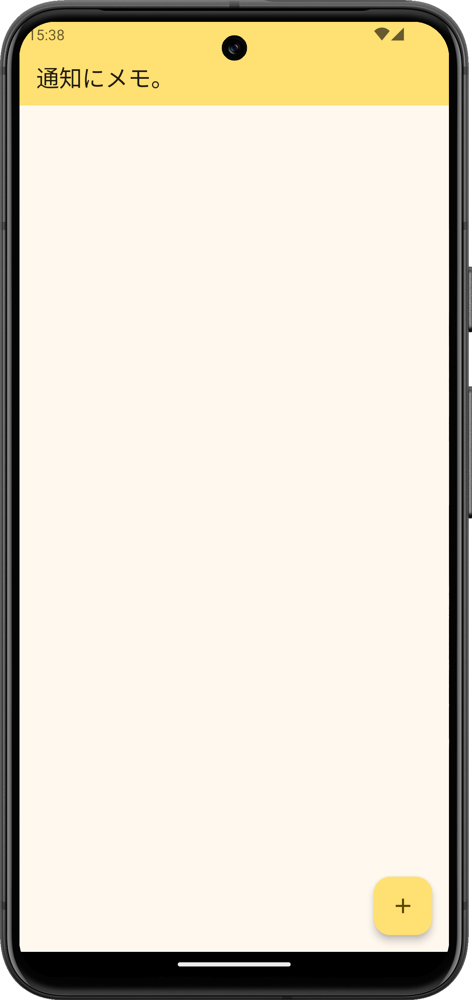

-
このページは、Androidアプリ「通知にメモ。」の使い方を紹介するページです。
-
本アプリは、テキストボックスに入力した内容を通知として表示させることで
簡易的なメモを提供するアプリです。

-
通知の権限を許可する
アプリ初回起動時に通知の権限が表示されたら、「許可」を選択してください。
これにより、アプリからの通知を受け取ることができます。
-
通知メモの新規作成
画面下部の「+」ボタンをタップして、新しい通知メモを作成します。
メモの新規作成画面が表示されます。
優先度を「高」または「低」から選択し、メモのタイトルと内容を入力します。
入力が完了したら、「通知メモの作成」ボタンを押してメモを保存します。
-
メモの修正
一度作成したメモは、リストからタップすることで修正できます。
修正したいメモを選択し、内容を更新してください。
※消去した通知を再度表示させたい場合も、同じ手順で再表示できます。
-
メモの削除
メモを削除したい場合は、該当するメモのゴミ箱マークをタップします。
これにより、そのメモがリストから削除されます。
-
Androidの通知設定
優先度ごとの挙動や通知設定については、Androidの設定に従います。
通知の表示方法や設定の詳細は、デバイスの通知設定で確認・変更できます。
- 一般的なAndroidの通知設定方法
設定を開く。
→「アプリと通知」または「通知」を選択。
→「アプリ」を選択し、「通知にメモ。」を選択します。
→通知のオン/オフを変更したり、優先度ごとに設定を変更することができます。